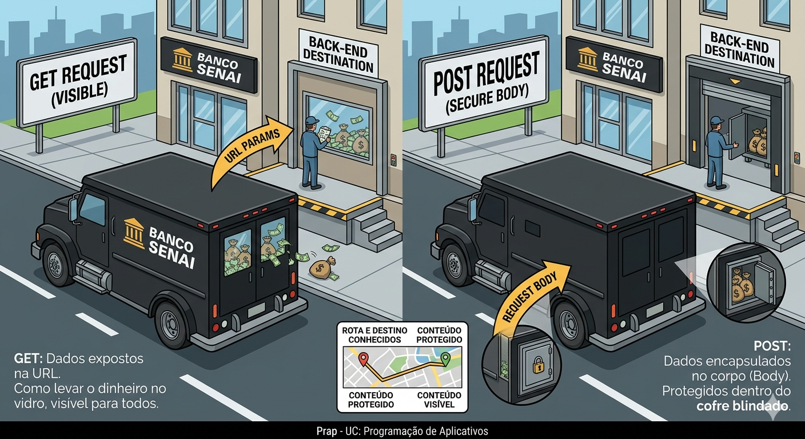
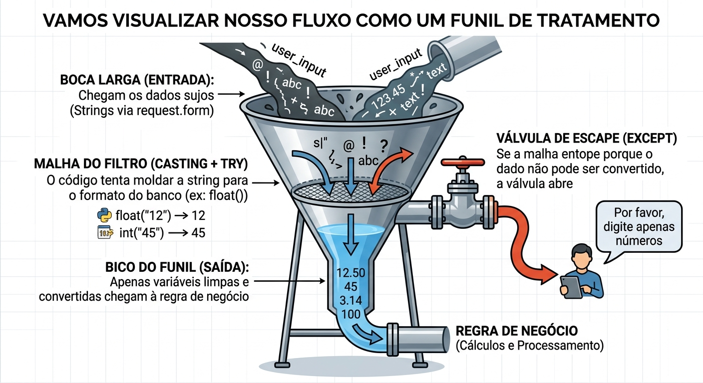
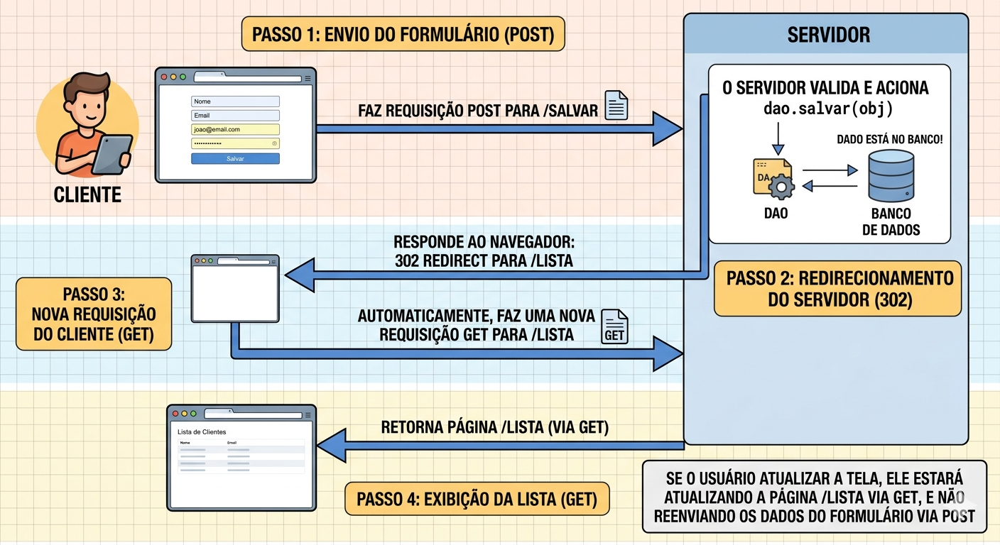

Descrição: Recebimento de dados via POST e gravação no banco de dados. Aplicação prática de conversão de tipos (casting) e tratamento de exceções (Try/Except) para garantir a integridade do sistema, finalizando com a persistência via padrão DAO e controle de redirecionamento HTTP.
O formulário de atualização de produtos permite que o usuário envie o texto "cinquenta" no campo numérico de preço.
Sem validação e tratamento adequado no back-end, o servidor tenta gravar essa string bruta (texto) em uma coluna decimal no banco de dados, resultando em um erro fatal que derruba a aplicação inteira.
Este cenário ilustra a regra de ouro do desenvolvimento web: nunca confie cegamente nos dados enviados pelo cliente. Hoje, vamos construir a barreira de proteção que impede que dados malformados destruam nossas aplicações.
Se você fosse o desenvolvedor responsável por processar os dados de um formulário de cartão de crédito no nosso sistema, como garantiria que um erro de digitação do usuário fosse tratado sem "quebrar" o servidor e sem expor informações sensíveis na URL do navegador?
Quando desenvolvemos aplicações web, precisamos gerenciar como a interface do usuário (HTML) conversa com o nosso servidor (Python). Para isso utilizamos os "Verbos" HTTP (ou métodos de requisição) que indicam a ação a ser realizada em um recurso (como uma API ou página web). Os principais são:
Eles garantem semântica e boas práticas, cruciais para arquiteturas RESTful.
O método POST é um dos pilares do protocolo HTTP, criado especificamente para enviar dados do cliente para o servidor com a intenção de criar ou modificar recursos. Diferente do método GET, que expõe os dados diretamente na URL, o POST encapsula as informações dentro do corpo da requisição.
Utilizamos o POST por dois motivos fundamentais: segurança e capacidade. Como os dados não ficam visíveis na barra de endereços do navegador, evitamos que senhas ou dados financeiros sejam armazenados acidentalmente no histórico do usuário ou nos logs de rede. Além disso, o corpo da requisição suporta um volume muito maior de dados, permitindo o envio de formulários extensos ou o upload de arquivos.

from flask import Flask, request
app = Flask(__name__)
# Definimos explicitamente que a rota aceita apenas o método POST
@app.route('/cadastrar_produto', methods=['POST'])
def cadastrar_produto():
# request.form atua como um dicionário contendo os dados do formulário
nome_produto = request.form.get('nome')
preco_bruto = request.form.get('preco')
return f'Recebido: Produto {nome_produto} com preço {preco_bruto}'Para entender como esse código funciona, vamos imaginar que o nosso servidor é uma Portaria de uma Fábrica Inteligente.
@app.route('/enviar') \n def enviar(): return request.form['email'] para evitar erros caso o campo email não seja enviado.Antes mesmo de tentar converter um dado, precisamos "limpar" a entrada. O usuário pode enviar espaços extras, caracteres especiais ou scripts maliciosos.
Como você bem pontuou, o HTTP é "textual". O Casting é o ato de forçar um tipo de dado a se tornar outro. No Python: Usamos funções construtoras como int(), float(), str() ou bool().
O risco: O Casting é uma operação "otimista". Ele pressupõe que o dado é compatível. Se não for, ele quebra a execução.
É a nossa rede de proteção (Error Handling). Em vez de deixar o programa morrer, nós prevemos o erro.
Imagine receber um valor de um formulário de checkout:
# Suponha que o valor veio do HTML como " 150.50 "
valor_bruto = " 150.50 "
# 1. SANITIZAÇÃO
valor_limpo = valor_bruto.strip()
# 2 e 3. TRY/EXCEPT + CASTING
try:
preco = float(valor_limpo)
print(f"Processando pagamento de R$ {preco}")
except ValueError:
# Plano B: Se o usuário enviou "abc", caímos aqui
print("Erro: O valor digitado não é um número válido.")Esse código é o exemplo perfeito de uma "defesa em camadas" no back-end. Ele prepara o dado, tenta transformá-lo e oferece uma saída honrosa caso algo dê errado. Aqui está o detalhamento de cada etapa:
valor_bruto = " 150.50 "Na web, os dados costumam vir com "ruído". Espaços em branco antes ou depois do número são extremamente comuns porque o usuário pode ter apertado a barra de espaço sem querer. Como o Python é rigoroso, float(" 150.50 ") poderia causar problemas em algumas situações ou versões, dependendo de como o caractere de espaço é interpretado.
valor_limpo = valor_bruto.strip()Aqui o código faz a "limpeza das mãos". O método strip() remove todos os espaços em branco (ou quebras de linha) do início e do fim da string.
Resultado: O dado agora está "puro", restando apenas o que realmente importa para a conversão.
try:
preco = float(valor_limpo)Dentro do try, o Python tenta fazer o Casting (conversão de tipo). Ele pega a string "150.50" e tenta transformá-la em um número decimal (float). Se o conteúdo for numérico, a variável preco recebe o valor e o código segue para a próxima linha (print).
except ValueError:
print("Erro: O valor digitado não é um número válido.")Este é o "Plano B". Se o usuário tivesse digitado "vinte reais", o float() dispararia um erro chamado ValueError.
Em resumo: O código diz ao computador: "Limpe esse texto, tente transformá-lo em número e, se você não conseguir porque o texto é inválido, apenas me avise em vez de entrar em pânico e parar de funcionar."

Se você usar IAs Gerativas para criar lógicas de validação (como Expressões Regulares - Regex - para validar e-mails), teste rigorosamente. IAs podem gerar regex ineficientes que sofrem de "Catastrophic Backtracking", derrubando seu servidor ao processar uma string propositalmente malformada. A validação básica do tipo via try/except é a sua última e mais confiável linha de defesa.
Após a recepção, conversão e validação dos dados, precisamos salvar a informação e informar o usuário do sucesso. Neste momento, instanciamos nossos objetos de modelo (ex: Produto(nome, preco)) e delegamos o trabalho sujo de conversar com o banco de dados para a nossa camada DAO (Data Access Object). Isso mantém nosso código limpo (Separation of Concerns).
Tão importante quanto salvar é o controle de resposta HTTP. Se após um POST com sucesso você utilizar a função render_template(), a URL no navegador do usuário não mudará. Se ele apertar F5 (atualizar a página), o navegador avisará "Confirmar reenvio de formulário" e, se ele aceitar, o POST é repetido, podendo duplicar a inserção no banco de dados. Para evitar isso, utilizamos o padrão Post/Redirect/Get (PRG): após um POST bem-sucedido, forçamos o cliente a fazer um GET em outra rota através do redirect().

from flask import redirect, url_for, flash
# Considerando que temos as classes Produto e ProdutoDAO importadas
@app.route('/salvar_produto', methods=['POST'])
def salvar_produto():
nome = request.form.get('nome')
preco_str = request.form.get('preco')
try:
preco = float(preco_str)
except (ValueError, TypeError):
flash("Erro: O preço deve ser numérico.")
return redirect(url_for('exibir_formulario')) # Recarrega o form em caso de erro
# Instanciamos a regra de negócio
novo_produto = Produto(nome, preco)
# Delegamos a persistência para o DAO
dao = ProdutoDAO()
dao.salvar(novo_produto)
# Envia uma mensagem temporária de feedback de sucesso
flash(f"Produto {nome} cadastrado com sucesso!")
# Padrão PRG: Redireciona mudando o estado do navegador e limpando o POST
return redirect(url_for('listar_produtos'))Após a conversão bem-sucedida, o back-end assume um papel de regência. Ele molda o objeto novo_produto e chama o ProdutoDAO, que encapsula a lógica SQL de persistência, mantendo a nossa rota Flask limpa. O método flash() do Flask guarda mensagens temporárias na sessão que podem ser lidas e exibidas pela próxima tela, garantindo que o usuário tenha um feedback visual da sua ação.
Finalmente, o redirect(url_for('nome_da_funcao')) muda a URL e devolve o usuário para uma área segura de leitura, impedindo o duplo cadastro acidental na mesma tabela.
Sempre utilize o url_for('nome_da_funcao') dentro do redirect(), em vez de escrever a rota manual (ex: redirect('/lista')). O url_for garante que se, no futuro, você alterar o caminho da URL de /lista para /produtos/lista, seu redirecionamento não vai quebrar.
Pergunta: Por que tudo o que vem do formulário via HTML é considerado string, mesmo que no input eu defina <input type="number">?
Resposta: O atributo type="number" é apenas uma instrução visual e de validação básica para o navegador do usuário (Front-end). Quando o navegador empacota os dados e os envia pelo protocolo HTTP para o servidor, o protocolo transforma tudo em texto bruto (strings). É tarefa inegociável do Back-end transformar novamente esses textos em dados estruturados.
Pergunta: O flash() precisa de uma "secret_key". Por que e o que é isso?
Resposta: O flash() guarda a mensagem nos cookies de sessão do navegador de forma criptografada temporariamente. Para criptografar e assinar essas informações de forma que os usuários não possam forjar mensagens, o Flask exige que você defina uma app.secret_key única e complexa no início do projeto.
Pergunta: Por que separar a lógica do DAO e não fazer os comandos de banco de dados diretamente dentro do try/except da rota?
Resposta: Isso fere a arquitetura de Separation of Concerns (Separação de Responsabilidades). Se você mudar de banco de dados (ex: de MySQL para PostgreSQL), você teria que caçar todos os Inserts espalhados pelas dezenas de rotas Flask. Com o DAO, todas as conexões ficam isoladas lá, e a rota fica responsável apenas por entender o HTTP.
Pergunta: Qual a diferença prática entre redirect(url_for('home')) e redirect('/home')?
Resposta: O redirect('/home') faz hardcode (chumba o código) da URL. O url_for('home') localiza dinamicamente a função Python cujo nome seja def home():. Se um dia você decidir que a rota deve se chamar /painel-principal, alterando o @app.route(), o url_for atualiza todos os links do sistema automaticamente.
Pergunta: Meu try/except tem um problema: se o formulário enviar um campo em branco, ele converte pra inteiro?
Resposta: Se o campo não for preenchido, request.form.get() traz "" (string vazia). Ao tentar fazer int(""), o Python lançará um ValueError, que ativará o except, acionando a sua camada de proteção. Isso é o comportamento esperado para dados insuficientes.
- Este desafio final será apresentado depois.
No projeto final, todos os grupos estão construindo sistemas onde dados fluem das ideias no HTML e entram para o Banco de Dados. Todo o aprendizado de hoje garante que quando os usuários finais começarem a inserir informações ou testar os limites do seu projeto, o Back-End não apenas resistirá à quebra, como persistirá os objetos validados através das classes DAO com segurança, completando a primeira versão funcional e resiliente da aplicação completa. A entrega do bloco funcional CRUD será embasada nessas técnicas de segurança.